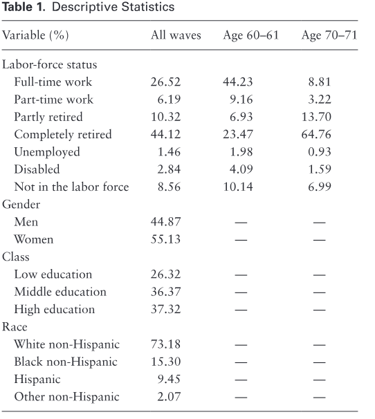
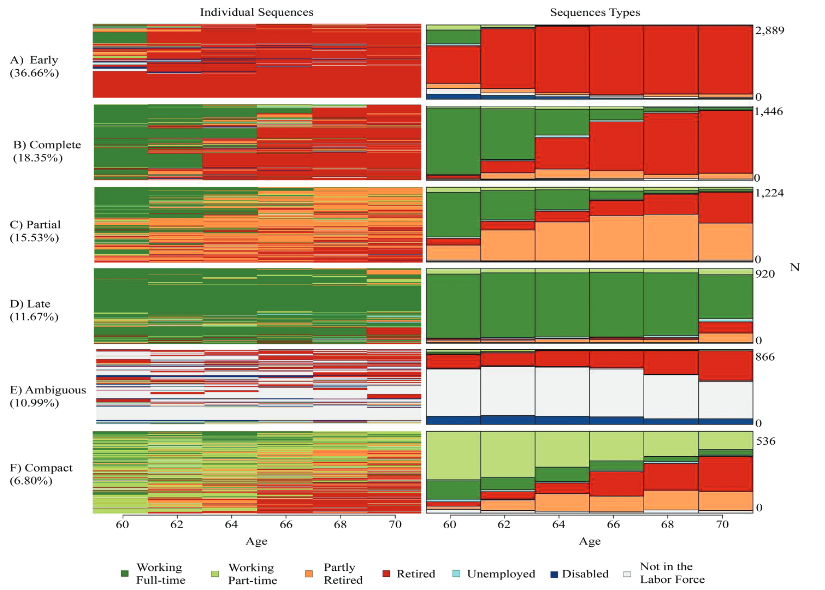
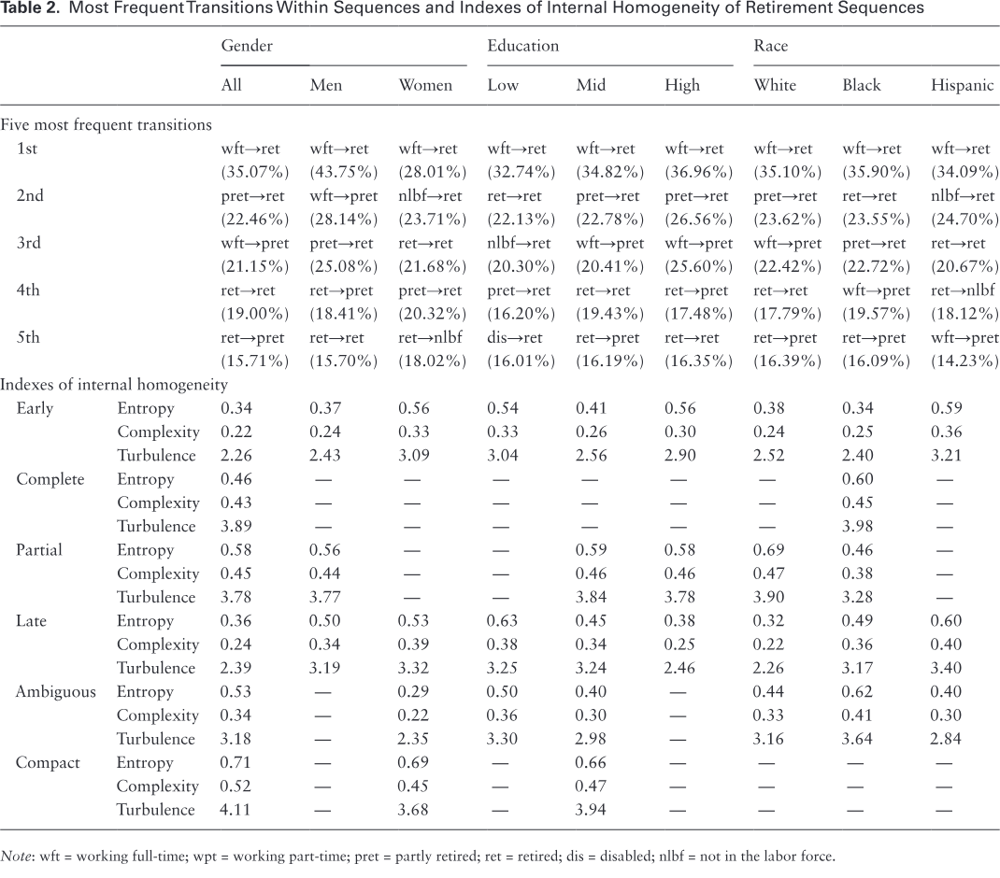
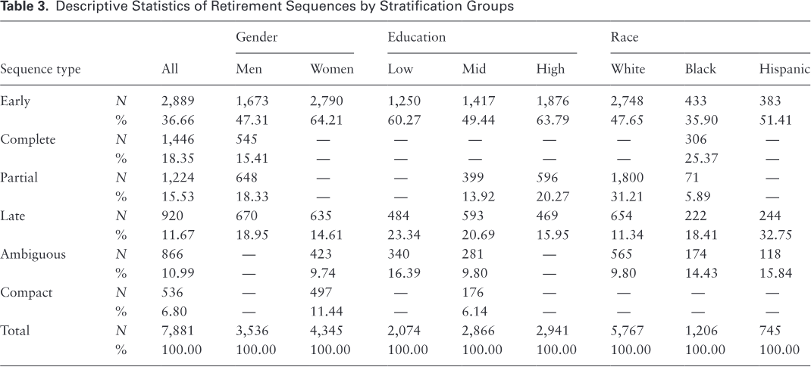
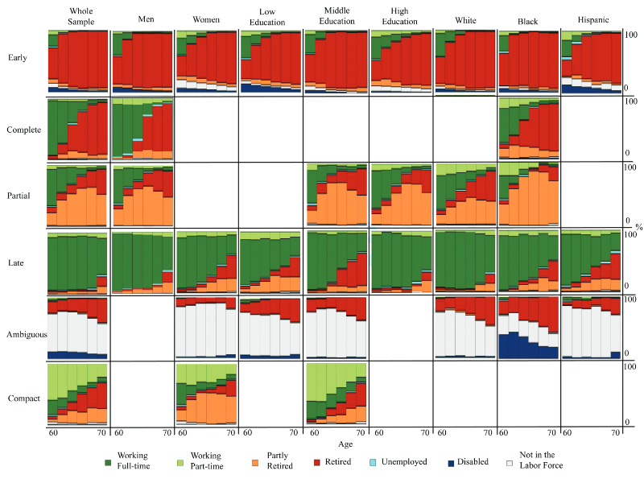

© The Author(s) 2017. Published by Oxford University Press on behalf of The Gerontological Society of America. All rights reserved. For permissions, please e-mail: journals.permissions@oup.com.
Esteban Calvo, PhD; Ignacio Madero-Cabib, PhD; and Ursula M. Staudinger, PhD.
Affiliations: Public Policy Institute, School of Business and Economics, Universidad Diego Portales, Santiago, Chile; Department of Epidemiology and Robert N. Butler Columbia Aging Center, Columbia University, New York, New York; Department of Sociology, Faculty of Social Sciences, Universidad de Chile, Santiago, Chile; Robert N. Butler Columbia Aging Center, Columbia University, New York, New York.
Address correspondence to Esteban Calvo, PhD, Robert N. Butler Columbia Aging Center, Mailman School of Public Health, Columbia University, 722 W. 168th Street, Office 412, New York, NY 10032. E-mail: esteban.calvo@columbia.edu Received: November 10, 2016; Editorial Decision Date: March 28, 2017. Decision Editor: Rachel Pruchno, PhD.
Abstract
Purpose of the Study: A destandardization of labor-force patterns revolving around retirement has been observed in recent literature. It is unclear, however, to which degree and of which kind. This study looked at sequences rather than individual statuses or transitions and argued that differentiating older Americans’ retirement sequences by type, order, and timing and considering gender, class, and race differences yields a less destandardized picture.
Design and Methods: Sequence analysis was employed to analyze panel data from the Health and Retirement Study (HRS) for 7,881 individuals observed 6 consecutive times between ages 60–61 and 70–71.
Results: As expected, types of retirement sequences were identified that cannot be subsumed under the conventional model of complete retirement from full-time employment around age 65. However, these retirement sequences were not entirely destandardized, as some irreversibility and age-grading persisted. Further, the degree of destandardization varied along gender, class, and race. Unconventional sequences were archetypal for middle-level educated individuals and Blacks. Also, sequences for women and individuals with lower education showed more unemployment and part-time jobs, and less age-grading. Implications: A sequence-analytic approach that models group differences uncovers misjudgments about the degree of destandardization of retirement sequences. When a continuous process is represented as individual transitions, the overall pattern of retirement sequences gets lost and appears destandardized. These patterns get further complicated by differences in social structures by gender, class, and race in ways that seem to reproduce advantages that men, more highly educated individuals, and Whites enjoy in numerous areas over the life course.
Keywords: Life course/life span, Sociology of aging/social gerontology, Workforce issues, Productive aging, Public policy
Introduction: Retirement Sequences as a Continuous Process
A common belief is that contemporary societies provide fewer and fewer prescriptions about what to do with our lives, as well as how and when we do it. This lay belief finds backing in research documenting a variety of life courses with nonlinear changes at varied ages (i.e., the destandardization of the life course), though several scholars have contested this idea (Kohli, 2007; Mayer, 2009) and highlighted variations across social groups (i.e., social stratification; Levy & Widmer, 2013; Widmer & Ritschard, 2009). Extant literature studying later-life labor-force patterns has been more enthusiastic about the destandardization hypothesis (Fasang, 2012; Han & Moen, 1999) and embraces the idea of social stratification (Loretto & Vickerstaff, 2015) more than studies focusing on life-course patterns in general (Kohli, 2007; Mayer, 2009). Policy, economic, and demographic changes over the past three decades are claimed to have undermined regularity in later-life careers and exacerbated differences across groups (Tang & Burr, 2015). Retirement is viewed in this context as a complex process unfolding over time and varying considerably across individuals, rather than a prototypical one-time transition from full employment to complete retirement (Szinovacz, 2013).
With a few exceptions, however, extant literature has been criticized for focusing on statuses or transitions (Han & Moen, 1999), using loose or convoluted definitions of retirement (Fisher, Chaffee, & Sonnega, 2016) and destandardization (Fasang, 2012), and frequently overlooking group differences in their empirical models, despite acknowledging their theoretical importance (Loretto & Vickerstaff, 2015). As explained in the following paragraphs, we address these limitations by proposing a sequence rather than a status or transition model of retirement, clearly defining destandardization, and systematically investigating stratification.
Life-course research first approached later-life labor-force patterns by studying statuses or transitions (Calvo, Sarkisian, & Tamborini, 2013); that is, by taking snapshots of life which are traditionally modeled by using cross-sectional regressions, event-history analysis, or latent transition models. In contrast, we conceptualized labor-force patterns in later life as a retirement sequence. Whereas a “status” concerns a momentary or permanent state and a “transition” concerns a change of status, a “sequence” refers to a chronologically ordered set of statuses and transitions (Giele & Elder, 1998).
A sequence approach, we argue, allows for more precision when investigating patterns of retirement. To our knowledge, only a few studies have taken a sequence approach to later-life labor-force participation patterns and none of these focused on both destandardization and stratification using nationally representative longitudinal data of older Americans. Han and Moen (1999) focused exclusively on the temporal patterning of retirement for 401 American retirees from a very select group of mostly White individuals from six large companies in upstate New York, who were born before 1931 and had retired by 1990. Other studies using European datasets, though more numerous, ask different questions by investigating, for instance, individual retirement trajectories within social institutions (Fasang, 2010), the interplay between work, caregiving, and volunteering (van der Horst, Vickerstaff, Lain, Clark, & Geiger, 2016), vulnerability in late careers (Madero-Cabib, 2015), variations in financial outcomes across pension systems (Fasang, 2012; Madero-Cabib & Fasang 2016), and retirement timing (Madero-Cabib, Gauthier, & Le Goff, 2016).
For the sake of conceptual simplicity, the notion “retirement sequences” will henceforth be used to describe later-life careers encompassing multiple chronologically ordered transitions in labor-force statuses experienced between the ages of 60 and 70 years, which may or may not lead to the end of paid work and the beginning of complete retirement. To illustrate, retirement sequences may include transitions from employment to partial retirement, from retirement to part-time work, or from unemployment to retirement. We defined retirement sequences to be “destandardized” when (1) they differ from the conventional model of completely retiring from a full-time job around age 65 ( unconventional type ), (2) include frequent reversing of status changes ( reversible order ), and (3) encompass the same transition occurring at varied ages ( flexible timing ). In contrast, “standardized” retirement sequences are defined to follow the conventional model of completely retiring from a full-time job around age 65, irreversible transitions, and specific ages for specific transitions. All three characteristics are required to denote high destandardization.
Conversely, the absence of all three characteristics denotes high standardization. We further assumed that gender, class, and race are associated with differences in the degree of destandardization. This assumption is based on the fact that gender, race, and class are linked with differences in labor-market opportunities, as well as in work-related expectations and preferences. We therefore expected that women, the less educated, and non-Whites would show more destandardized retirement sequences than their counterparts. We argue that combining sequence analysis with social stratification and clearly defining destandardization allows for more precision in identifying patterns of retirement.
Destandardization and Stratification of Retirement Sequences
We organized this literature review in two subsections, one reviewing literature on destandardization by type, order, and timing, and another reviewing literature on stratification by gender, class, and race.
Destandardization as Unconventional Type, Reversible Order, and Flexible Timing
Unconventional Type
Whenever increased life expectancy is coupled with little retirement resources, policymakers have promoted continued employment and workplace flexibility to improve financial security in retirement (Ellis, Munnell, & Eschtruth, 2014). Consequently, older Americans tend to remain employed, engage in bridge jobs and phased retirement (Cahill, Giandrea, & Quinn, 2015), or work part-time and retire gradually (Calvo, Haverstick, & Sass, 2009). This suggests a work–retirement transition diversification in the United States (Tang & Burr, 2015), which is indicative, albeit not confirmative, of the emergence of unconventional types of retirement sequences (Han & Moen, 1999).
Overall, it appears that conventional retirement from full-time employment to complete retirement around age 65 might have become just one of many retirement sequences and possibly not the most prevalent one.
Reversible Order
Another characteristic of destandardization is the reversal of transitions. Thus, retirement sequences may or may not include transition reversals. Standardized retirement sequences have been characterized as linear progressions through irreversible changes based on personal and social scripts describing the “right order” (Szinovacz, 2013). Studies focusing on later-life labor-force patterns, however, have been exceptionally attentive to nonlinear and reversible transitions and document a substantial fraction of older adults who unretire (Maestas, 2010), get reemployed (Cahill et al., 2015), or repeatedly shift in and out of the labor force (Tang & Burr, 2015). Reverse-order transitions also seem to be associated with the increase in female labor-force participation and with policies promoting lifelong learning among older workers (Ellis et al., 2014). We do not know, however, if reverse-order transitions occur often and similarly enough across older Americans to form separate clusters of retirement sequences.
Flexible Timing
Several scholars have argued that life-course structures are inherently dependent on normative age expectations (Settersten, 2006). Age norms and expectations are reinforced by cultural and institutional processes, which act as clocking devices that lead to high standardization (e.g., timing for enrolling in primary education, getting married, having children, or entering the labor market). Along these lines, there is evidence for cultural and institutional age norms scripting the transition from work to retirement to take place either at the early or full social security eligibility age (Ellis et al., 2014).
However, retirement timing has also been found to be flexible. In the United States, the average retirement age has shifted and the range expanded, eroding the regularity in retirement timing traditionally anchored by a core of male employees on conventional career tracks (Han & Moen, 1999). The recent trend toward higher and more variable retirement age is due to a wide range of institutional, economic, and demographic changes, including: a gradual increase of full retirement age from 65 to 67 in recent years, new penalties on pension benefits for early retirement, delayed retirement credit for each year of retirement postponement up to age 70, the abolition of mandatory retirement in most occupations, strong legislation to avoid any attempt of age discrimination toward older workers, a shift from defined contribution to defined benefit pensions, fewer physically demanding jobs, and employees’ improved health and longevity (Fisher et al., 2016; Harris, Krygsman, Waschenko, & Rudman, 2017; Lain, 2012; Staudinger, Finkelstein, Calvo, & Sivaramakrishnan, 2016). In sum, extant literature suggests that current retirement sequences are highly flexible in timing.
Destandardization Across Gender, Class, and Race
We assumed that the destandardization of retirement sequences (unconventional type, reversible order, and flexible timing) is likely not to be uniformly distributed across the population but rather vary by gender, class, and race, social categories with important implications for the labor market.
Gender Life-course structures have been found to be destandardized for women, whereas being more conventional for men (Levy & Widmer, 2013; Widmer & Ritschard, 2009). Women traverse more diverse career paths and are more likely to leave the labor market when marrying and having children, as well as to retire early in order to perform caregiving roles (Fisher et al., 2016; Han & Moen, 1999). Numerous women then return to work in part-time positions or remain outside the labor force (Madero-Cabib, 2015; Tang & Burr, 2015). Gender norms and female labor-force participation are in flux, however, making the female caregiver and male breadwinner divide fuzzier.
Class Among older adults, class is often indexed by level of education (Lynch & Brown, 2011). More highly educated individuals tend to earn more income, which in turn allows them to retire at earlier ages, but they also have better health, better working conditions, more interesting occupations, and experience later career onset, factors which enable and encourage them to work longer (Fisher et al., 2016; Han & Moen, 1999; Szinovacz, Martin, & Davey, 2014). Less educated individuals are more likely to work intermittently in low-qualified and part-time jobs, become unemployed or disabled, shift in and out of the labor force, or retire early, with little expectations to continue working after the state pension age, while more educated individuals are more likely to be employed in conventional and uninterrupted careers, retire later, and become reemployed after retirement (Kim, 2013; Lain, 2012; Szinovacz et al., 2014).
Race Compared with Blacks, Whites, and Hispanics are less likely to interrupt their careers due to layoffs, are more likely to be promoted, tend to earn higher salaries, have better retirement conditions, and better health (Fisher et al., 2016; McNamara & Williamson, 2004). Older Blacks also report more difficulties finding employment than their non-Blacks counterparts, and are more likely to experience discrimination and lack of pension income. After age 65, non-Whites are more likely than Whites to work in low-earning and part-time jobs (Lain, 2012), and Whites and Hispanics are more likely than Blacks to expect retiring after the state pension age (Szinovacz et al., 2014).
In sum, the literature reviewed in this section documents a destandardization of labor-force participation patterns revolving around retirement, especially for statuses and transitions experienced by women, lower-educated individuals, and Blacks. It is unclear, however, to which degree retirement sequences are destandardized and whether they are similarly destandardized in type, order, and timing, as well as across gender, class, and race.
Research Hypotheses
Overall, we hypothesized that by looking at retirement sequences rather than individual statuses and transitions, differentiating older Americans’ retirement sequences by type, order, and timing, and considering gender, class, and race differences, we will find evidence for moderately destandardized and highly stratified retirement sequences. Because we defined highly destandardized retirement sequences as having three simultaneous characteristics (unconventional type, reversible order, and flexible timing) and highly stratified as having all the opposite characteristics (conventional type, irreversible order, and age-graded timing), our moderate destandardization hypothesis was operationalized as meeting at least one but less than three of the following criteria: the conventional retirement model of complete retirement from full-time employment around age 65 is not the most prevalent type of retirement sequence ( unconventional type ), more than half individuals unretire, become reemployed, or transition several times in and out of a given labor-force status ( reversible order ), and retirement sequences encompass the same transition occurring at varied ages ( flexible timing ). When considering differences between relevant social groups ( social stratification hypothesis ), we expected that women, lower-educated individuals, and Blacks demonstrate more destandardized retirement sequences than men, highly educated individuals, and non-Blacks.
In the next section, we provide full details for the data, measures, and procedure to test our assumptions.
Methods
Data
We used data from 11 waves of the Health and Retirement Study, a nationally representative panel survey of older Americans and their spouses surveyed every 2 years since 1992 (HRS; Chien et al., 2015). We selected our sample from the initial HRS cohort of 9,752 individuals born between 1931 and 1941 and responding to the survey in 1992. We focused on the longest observable time span across individuals, from ages 60–61 to 70–71 (Supplementary Appendix A), dropping 1,871 individuals who died before age 70–71. We addressed missing values on 4.23% of all data points by conducting a single stochastic imputation by chained equations including all variables listed in the following section and supplementary demographic, socioeconomic, and health variables (Allison, 2002). The resulting balanced panel data set included 7,881 individuals observed six consecutive times over a 10-year period (i.e., 47,286 observations).
Measures
Labor-Force Status
To construct retirement sequences we used labor-force status as coded by RAND (Chien et al., 2015): working full-time, working part-time, partly retired, completely retired, unemployed, disabled, or not in the labor force.
Social Stratification
We used measures of gender, class, and race. Gender is a dummy variable indicating females with 1 and males with 0. Class is based on years of education recoded into three levels: low (less than 12 years of education), middle (12 years of education, which is typically high school), and high (more than 12 years). Finally, race is measured with three categories, indicating: White, Black, and Hispanic. Table 1 presents descriptive statistics on the variables described earlier (for more details see Supplementary Appendix B).

Analytic Strategy
We used sequence analysis to identify retirement sequences, creating sequence data for each individual and then comparing their similarities (MacIndoe & Abbott, 2004). Two individual sequences are considered similar if they are composed of similar statuses occurring in a similar order and at similar time-points. The similarity comparison results in a matrix summarizing the distance between all possible sequence pairs. “Distance” refers to the number of modifications (substitution and/or insertion/deletion) in statuses needed in one sequence to turn it into other sequence (Gabadinho, Ritschard, Müller, & Studer, 2011).
We calculated distance using optimal matching analysis (OMA), which considers both substitution and insertions/ deletion costs (Elzinga, 2014; Gabadinho et al., 2011). Because using a theoretically derived cost matrix would have been highly arbitrary, we gave all statuses equal costs. We obtained similar results using dynamic hamming distances (DHD) and generalized hamming (HAM) methods, which focus exclusively on substitution costs (Supplementary Appendix C).
Drawing on the pairwise distance matrix, we performed a cluster analysis to classify individual sequences into homogeneous types. We used the Ward hierarchical clustering method to agglomerate individual sequences and create sequence types or groups of individual sequences. To determine the most discriminant number of sequence types, we applied average silhouette width cluster cutoff criteria (Gabadinho et al., 2011; Supplementary Appendix D). We obtained similar results using the Dendrogramme cluster cutoff criteria (results available from the authors upon request).
Next, we created graphs illustrating individual sequences and sequence types. Individual sequences portray the sequences of each individual composing a sequence type, while sequence types gather individual sequences into a more holistic and abstract cluster. We then obtained descriptive statistics on the most frequent transitions within sequences types and explored three indexes of their internal dynamism: entropy, complexity, and turbulence (Elzinga, 2014; Gabadinho et al., 2011). Next, we conducted simple and multifactor discrepancy analyses to test whether there were significant differences in sequences across gender, class, and race (Studer, Ritschard, Gabadinho, & Müller, 2011). Finally, we conducted additional analyses suggesting that our results were robust to including deceased individuals (Supplementary Appendix E), stratifying by period and cohort (Supplementary Appendix F), and using weights (Supplementary Appendix G).
Given that sequence analysis is a relatively novel technique, we provide full details for our procedure to test our assumptions. First, we first ran analyses on the whole sample to test the destandardization hypothesis . Moderate destandardization would be supported if there is evidence for at least one, but not all conditions indicating high destandardization, which are: unconventional type, reversible order, and flexible timing. The unconventional type hypothesis would be supported if the average silhouette width cluster cutoff criteria suggested a number of sequence types greater than one and with the most prevalent type being different from the conventional retirement model.
The reversible order hypothesis would be supported if there was evidence, for more than half of the cases, of reversible transitions in the graphs of individual sequences, graphs of sequences types, and descriptive statistics on the most frequent transitions within sequences. The flexible timing hypothesis would be supported if we found evidence of the same transition occurring at varied ages in the graphs of individual sequences and sequence types, as well as in three indexes of internal dynamism: entropy, complexity, and turbulence. These indexes allow for a formal examination of flexible timing in retirement sequences. At any point, the entropy index is 0 when all respondents are in the same status and 1 when distributed evenly across all possible statuses. A complexity index of 0 indicates complete similarity of statuses across individuals and that no transitions occurred between statuses, while a value of 1 indicates the opposite. The turbulence index accounts for the number of distinct subsequences that can be constructed from one sequence type, which arises from the analysis of all transitions in a sequence and the time elapsed in each status. A high turbulence index therefore reflects a large number of distinct subsequences in one sequence, which in turn indicates that statuses and transitions are highly time-varying. Next, we proceeded to test the social stratification hypothesis , which would be supported if we identified variations in the level of destandardization across gender, class, and race. Specifically, we expected women, lowereducated individuals, and Blacks to follow retirement sequences that are more destandardized than those of their respective counterparts. We began by testing whether there were significant differences in sequences across gender, class, and race by conducting simple and multifactor discrepancy analyses (Supplementary Appendix H). Based on these results, we next repeated all the analyses for destandardization in separate stratified samples, which allows for each group to have different types of sequences, with more or less dynamic order and flexible. All analyses were carried out in R (R Core Team, 2014), using the TraMineR package for sequence analysis (Gabadinho et al., 2011).
Results
Destandardization in Type, Order, and Timing of Retirement Sequences
Fully supporting the unconventional type hypothesis, we found that the conventional model of complete retirement after working full-time was not the most prevalent type, but rather one among six types of retirement sequences (Supplementary Appendix D). Figure 1 depicts sequences for each individual within each sequences type, and aggregates individual sequences, depicting them holistically as a sequence type. The labels depicted in Figure 1 emphasize the distinctiveness of these retirement sequences: early, complete, partial, late, ambiguous, and compact. The early retirement sequence was the most prevalent, comprising 2,889 individuals representing 36.66% of the sample. In this sequence most individuals are completely retired by or before age 62.

Other retirement sequences were less prevalent, as presented in Figure 1. The complete retirement sequence is characterized by the conventional model of complete retirement from a full-time job, with most individuals beginning with a full-time job and being fully retired by age 66. The partial retirement sequence is characterized by partial retirement from a full-time job, with most individuals beginning with a full-time job and the largest group partly being retired at age 66. In the late retirement sequence most individuals begin working in a full-time job and remain doing so until age 66 and beyond. The ambiguous retirement sequence is characterized by most individuals moving from out of the labor force to retirement. Finally, the compact retirement sequence is characterized by partial retirement from a part-time job, with most individuals beginning with a part-time job and several finishing with partial retirement. The reversible-order hypothesis postulated that retirement sequences include more than half individuals that unretire, become reemployed, or transition several times in and out of a given labor-force status. Our results provided only modest support for this hypothesis.
Sequence types presented in Figure 1 are largely irreversible, though postretirement full-time work was observed for a small group in the ambiguous sequence. However, when exploring individual sequences, we found some evidence of reemployment and unretirement processes, as well as back and forth transitions into disability and out of the labor force. When considering the five most frequent transitions within sequences for the whole sample (top-left in Table 2), we observed that four imply a progression from work to retirement, while the fifth shows that 15.71% respondents made a transition from retirement to partial retirement at least once over the entire sequences span. In sum, it appears that most people followed a progression from degrees of work to degrees of retirement and that the few reversed order transitions that we observed were not similar enough to each other to create a separate sequence type.

Our flexible timing hypothesis, which posited that the same labor-force transitions happen at varied ages, is only partly supported by our results. Although most sequences depicted in Figure 1 were to some extent age-graded, we also observed labor-force transitions taking place at different ages. The most evident example is the presence of both early and late retirement sequence types. Also, within most sequences changes from retirement to full-time job, part-time job, and unemployment can occur at many different points, though they tend to concentrate at specific ages, as indicated by the indexes of internal dynamism (Table 2). The entropy, complexity, and turbulence indexes for the overall sample indicated that partial, ambiguous, and compact sequences were the most flexible in the sense that the statuses and transitions that compose them are relatively time-varying and may happen at different ages. Analyzing the longitudinal version of the entropy index suggests that the degree to which retirement sequences are age-graded changes around the legal retirement ages in complex ways (Supplementary Appendix I).
Overall, these results support the moderate destandardization hypothesis, as we find strong evidence for unconventional types of retirement sequences, but some irreversibility and age-grading persisted.
Gender, Class, and Race Stratification of Retirement Sequences
Additional results supported the social stratification hypothesis, which postulated that the destandardization of retirement sequences varied by class, gender, and race. First, we found that there are significant differences between the respective social groups making it useful to look at separate stratified sequence models (Supplementary Appendix H). Results from these separate stratified models are reported in Table 3 and Figure 2, which illustrate that the complete retirement sequence is not the most prevalent. This result is largely driven by men and Black non-Hispanics. Early and late retirement sequences appeared consistently across groups, the ambiguous and compact type were driven by low- or middle-educated women, and partially driven by non-Hispanic males with mid and high education. The ambiguous sequence for Blacks concentrated more disability, but is fairly consistent with the retirement sequences that emerged in the overall sample and other groups. Overall, we found more types of unconventional retirement sequences for women than men, middle-educated individuals than lower- and higher-educated individuals, and White and Black nonHispanics than Hispanics.


Figure 2 also suggests that retirement sequences were more reversible for some groups than others (stratified graphs of individual sequences are consistent and available from the authors upon request). For example, women and Hispanics experience unretirement during the first half of the ambiguous sequence. However, additional information presented in the top panel in Table 2 suggests that the percentage of respondents that experienced at least one reversible transition was relatively similar across groups, but the type of reverse transition may have been different. The transition from retirement to partial retirement was experienced by 18.41% of men, 16.19% of middle-level educated individuals, 17.48% of higher-educated individuals, and 16.39% of White non-Hispanics, while the transition from retirement to out of the labor force was experienced by 18.02% of women and 18.12% of Hispanics.
Graphs of sequence types and individual sequences did not provide clear evidence of retirement sequences being more flexible and having more time-varying statuses and transitions for some groups rather than others. However, results presented in the bottom panel of Table 2 suggested that the early and late retirement sequences, the only two retirement sequences that both men and women display simultaneously, were more flexible in timing for women and more age-graded for men. Similarly, the late and ambiguous sequences were more flexible for lower-educated, while more age-graded for middle- and higher-educated individuals. However, the entropy, complexity, and turbulence indexes for the early retirement sequence suggested more flexible timing for both lower- and higher-than middle-educated individuals. Hispanics also showed more flexible timing or less age-grading than Whites in the early retirement sequence, Blacks more flexible timing than Whites in the ambiguous retirement sequence, and Blacks and Hispanics more flexible timing than Whites in the late retirement sequence. (Supplementary Appendix I shows consistent results, but using a longitudinal approach to internal homogeneity of sequences.)
Discussion
In this study, we aimed to analyze the destandardization of labor-force experienced by Americans in their 60s (born between 1931 and 1941) using a sequence-analytic approach. We tested the degree of destandardization in type, order, and timing of retirement sequences, as well as variations in the degree of destandardization in retirement sequences stratified by gender, class, and race. By and large, the results confirmed our assumptions.
From a Snapshot to a Movie
Our findings showed that the conventional type (complete retirement at age 65 from a full-time employment) is only one type, and not the most prevalent one, among six types of retirement sequences. The early-retirement sequence was the most prevalent type across social groups, even though previous research has documented a reversal in the trend towards early retirement (Fisher et al., 2016). We also found a late-retirement sequence type across all social groups, though it was not as prevalent as the earlyretirement sequence in the birth cohorts that we analyzed.
Other unconventional retirement sequences were less frequent and more stratified. In contrast to what is suggested by previous literature, all retirement sequences consisted of a progression of changes with largely irreversible order . This finding is consistent with the interpretation that individuals do indeed follow personal and social scripts about the order of events during their retirement sequences (Szinovacz, 2013; Szinovacz et al., 2014). It has been suggested that these scripts are reinforced by a combination of choice (e.g., preferences and expectations) and both individual (e.g., money and health) and social constraints (e.g., labor market and social institutions; Fasang, 2012; Han & Moen, 1999; Szinovacz, 2013).
As part of high destandardization, it is expected that retirement sequences consisted of fewer age-graded changes targeting legal retirement ages that enable individuals to receive Social Security benefits. However, both early (62) and full (65–67) retirement ages seem to still operate as institutional markers for what is normatively expected within each retirement sequence (Supplementary Appendix I). Age norms seem to be looser (or individuals seem to exert more agency) at ages where the progression through a specific retirement sequence type is consistent with institutional markers about when to work or retire. For example, individuals in the early retirement sequence seem to undergo looser age guidelines before early retirement age (62), while greater pressures to completely retire after this age. In contrast, individuals in the late retirement sequence followed stricter guidelines to work full-time before the full retirement age (65–67), while looser age guidelines after this age. Individuals in the complete retirement sequence seem to have experienced tighter pressures to engage both in full-time work before early retirement age and in complete retirement after full retirement age, but looser age guidelines between these ages. The overall pattern suggests that the strength of age guidelines varies with age and depends on the specific retirement sequence type that individuals are navigating.
Overall, we were found moderate destandardization of the retirement sequences for the cohorts under investigation. Research on later-life labor-force patterns may have overstated the degree of destandardization. Based on this result, we are suggesting that investigating retirement sequences rather than individual statuses or transitions, allows identifying standardized patterns that remain obscured when event history analysis, latent transition models, or similar methods are used. When a continuous motion is represented as a series of snapshots, the pattern of retirement sequences gets lost and appears less standardized than suggested by previous literature analyzing the same cohorts with different methods.
From Averages to Group Differences
Besides analyzing sequences to increase precision, there is a need to consider potential differences between social groups, such as gender, class, and race that are exposed to very different opportunities and constraints on the labor market across time. We were indeed able to document substantial stratification of retirement sequences. This is in line with earlier work that has shown that later-life labor-force patterns are not uniform across the population (Loretto & Vickerstaff, 2015; Tang & Burr, 2015). But our findings move beyond most extant studies as we established differences for sequences rather than snapshots of life.
Specifically, our results provide novel evidence suggesting that the degree of standardization of retirement sequences in the United States (for the cohort born between 1931 and 1941) is strongly shaped by gender, class, and race. It may be helpful for policymakers to learn that the stratification of destandardization of retirement sequences reinforces advantages that men, higher educated individuals, and Whites enjoy in numerous areas over the life course. In line with our hypothesis, we found that throughout their 60s, women, middle-level educated individuals, and Blacks follow more unconventional retirement sequences than their respective counterparts (i.e., men, highly educated, and Whites or Hispanics). Furthermore, men and more highly educated individuals followed retirement sequences with few episodes of unemployment or part-time job. In contrast, women and low- or middle-level educated individuals experienced ambiguous and compact retirement sequences, where unemployment and part-time jobs are highly prevalent. These differences in their retirement sequences are possibly linked with worse health trajectories and financial costs (Azar, Madero-Cabib, Slachevsky, Staudinger, & Calvo, 2017). Thus, there seems to be a need for social policy to develop instruments that buffer such risks.
Limitations and Future Research
As novel as our results are, we would like to acknowledge a number of limitations. One limitation is that the data were collected biannually and we model them without accounting for changes in employers or occupations, which may result in some unobserved short-term labor-force changes and bridge jobs. Another limitation is that our results are age-, cohort-, and period-specific. As more birth cohorts and data collection points become available, it will be possible to better address age-period-cohort issues. For instance, future research may follow up individuals into their 70s, cover a longer historical period, and include younger cohorts in the sample. Future research could also use retrospective life-history data to analyze parallel sequences in family roles, or explore both the determinants and consequences of retirement sequences by comparing sequences across countries which differ in their labor-market and social-security regulations.
Conclusion
Past decades have seen a stark increase in theoretical and empirical explorations of life-course destandardization and stratification (Mayer, 2009). Although substantial progress has been achieved, studies focusing on labor-force patterns in later life have eluded an integrative model, tend to either focus on statuses or transitions, and frequently overlook social stratification. While statuses and transitions are both crucial in understanding the life course, bringing to bear the advantages of analyzing sequences is still in its infancy.
We proposed a sequence-analytic approach and presented a conceptual model of retirement sequences that defines and takes into account multiple components of destandardization (unconventional type, reversible order, and flexible timing). Furthermore, we found evidence that the stratification of retirement sequences by gender, class, and race must not be overlooked. To our knowledge, this is the first article to combine a sequence-analytic approach to labor-force patterns in later life using nationally representative data of older adults in the United States. This is an important contribution to policy and extant literature because there is increasing awareness of the risks of generalizing results obtained from studies focusing on snapshot statuses and transitions to whole sequences, ignoring heterogeneity in how life courses play out, and generalizing results from other countries or age groups.
We concluded that there are multiple types of retirement sequences among the aging population in the United States. More specifically, the conventional model of complete retirement from a full-time job around age 65 was not the most prevalent one for the 1931–1941 birth cohorts. However, we also found that these retirement sequences were only moderately destandardized, as they remained to some extent irreversible and age graded. Furthermore, as to be expected in a country characterized by strong disparities, we found that the destandardization of retirement sequences varied along gender, class, and racial lines.
Supplementary Material
Supplementary data is available at The Gerontologist
online.
Funding
This work was supported by the Columbia University President’s
Global Innovation Fund, CONICYT/FONDECYT/REGULAR/
N°1140107, CONICYT/FONDECYT/POSTDOCTORADO/
N°3160522, and CONICYT/FONDAP/Nº15130009.
Acknowledgments
The authors thank Katherine B. Indvik and two anonymous reviewers for their valuable comments on an earlier version of this article.
However, the authors should be held responsible for any remaining
errors or inaccuracies.
References
Allison, P. (2002). Missing data . Thousand Oaks, CA: Sage.
Azar, A., Madero-Cabib, I., Slachevsky, A., Staudinger, U., & Calvo,
E. (2017). From snapshots to movies: The association between
retirement sequences and aging trajectories in motor and cognitive functioning . Manuscript submitted for publication.
Cahill, K. E., Giandrea, M. D., & Quinn, J. F. (2015). Retirement
patterns and the macroeconomy, 1992–2010: The prevalence and determinants of bridge jobs, phased retirement, and
reentry among three recent cohorts of older Americans. The
Gerontologist , 55 , 384–403. doi:10.1093/geront/gnt146
Calvo, E., Haverstick, K., & Sass, S. (2009). Gradual retirement,
sense of control, and retirees’ happiness. Research on Aging , 31 ,
112–135. doi:10.1177/0164027508324704
Calvo, E., Sarkisian, N., & Tamborini, C. R. (2013). Causal effects of
retirement timing on subjective physical and emotional health.
The Journal of Gerontology, Series B: Psychological Sciences
and Social Sciences , 68 , 73–84. doi:10.1093/geronb/gbs097
Chien, S., Campbell, N., Chan, C., Hayden, O., Hurd, M., Main, R.,
… St.Clair, P. (2015). RAND HRS data documentation version
O . Santa Monica, CA: RAND.
Ellis, C., Munnell, A., & Eschtruth, A. (2014). Falling short: The
coming retirement crisis and what to do about it . New York:
Oxford University Press.
Elzinga, C. (2014). Distance, similarity and sequence comparison.
In P. Blanchard, F. Bühlmann, & J.-A. Gauthier (Eds.), Advances
in sequence analysis: Theory, method, applications (pp. 51–73).
New York: Springer.
Fasang, A. (2010). Retirement: Institutional pathways and individual trajectories in Britain and Germany. Sociological Research
Online , 15 . doi:10.5153/sro.2110
Fasang, A. (2012). Retirement patterns and income inequality. Social
Forces , 90 , 685–711. doi:10.1093/sf/sor015
Fisher, G., Chaffee, D., & Sonnega, A. (2016). Retirement timing:
A review and recommendations for future research. Work, Aging
and Retirement , 2 , 230–261. doi:10.1093/workar/waw001
Gabadinho, A., Ritschard, G., Müller, N., & Studer, M. (2011).
Analyzing and visualizing state sequences in R with TraMineR.
Journal of Statistical Software , 40 , 1–37. doi:10.18637/jss.v040.i04
Giele, J., & Elder, G. (1998). Methods of life course research:
Qualitative and quantitative approaches . Thousand Oaks, CA:
Sage.
Han, S.-K., & Moen, P. (1999). Clocking out: Temporal patterning
of retirement. American Journal of Sociology , 105 , 191–236.
doi:10.1086/210271
Harris, K., Krygsman, S., Waschenko, J., & Rudman, D. (2017) Ageism
and the older worker: A scoping review. The Gerontologist .
Advanced online publication. doi:10.1093/geront/gnw194
Kim, Y.-M. (2013). Diverging top and converging bottom:
Labour flexibilization and changes in career mobility in
the USA. Work, Employment & Society , 27 , 860–879.
doi:10.1177/0950017012464418
Kohli, M. (2007). The institutionalization of the life course: Looking
back to look ahead. Research in Human Development , 4 , 253–
271. doi:10.1080/15427600701663122
Lain, D. (2012). Working past 65 in the UK and the USA: Segregation
into ‘lopaq’ occupations? Work, Employment & Society , 26 , 78–
94. doi:10.1177/0950017011426312
Levy, R., & Widmer, E. (2013). Gendered life courses between indi-
vidualization and standardization . Vienna, Austria: LIT Verlag.
Loretto, W., & Vickerstaff, S. (2015). Gender, age and flexible work-
ing in later life. Work, Employment & Society , 29 , 233–249.
doi:10.1177/0950017014545267
Lynch, S. M., & Brown, J. S. (2011). Stratification and inequality
over the life course. In R. H. Binstock & L. K. George (Eds.),
Handbook of aging and the social sciences (7th ed., pp. 105–
117). San Diego, CA: Elsevier.
MacIndoe, H., & Abbott, A. (2004). Sequence analysis and opti-
mal matching techniques for social science data. In M. Hardy
& A. Bryman (Eds.), Handbook of data analysis (pp. 387–406).
London, UK: Sage.
Madero-Cabib, I. (2015). The life course determinants of vulnerability in late careers. Longitudinal and Life Course Studies , 6 ,
88–106. doi:10.14301/llcs.v6i1.299
Madero-Cabib, I., & Fasang, A. (2016). Gendered work–family life courses and financial well-being in retirement.
Advances in Life Course Research , 27 , 43–60. doi:10.1016/j.
alcr.2015.11.003
Madero-Cabib, I., Gauthier, J.-A., & Le Goff, J.-M. (2016). The
influence of interlocked employment–family trajectories on
retirement timing. Work, Aging and Retirement , 2 , 38–53.
doi:10.1093/workar/wav023
Maestas, N. (2010). Back to work: Expectations and realizations
of work after retirement. The Journal of Human Resources , 45 ,
718–748. doi:10.1353/jhr.2010.0011
Mayer, K. (2009). New trends in life course research. Annual
Review of Sociology , 35 , 413–433. doi:10.1146/annurev.
soc.34.040507.134619
McNamara, T. K., & Williamson, J. B. (2004). Race, gender, and
the retirement decisions of people ages 60 to 80: Prospects
for age integration in employment. International Journal of
Aging & Human Development , 59 , 255–286. doi:10.2190/
GE24-03MX-U34P-AMNH
R Core Team. (2014). R: A language and environment for statistical computing . Vienna, Austria: R Foundation for Statistical
Computing.
Settersten, R. (2006). Age structuring and the rhythm of the life
course. In J. Mortimer & M. Shanahan (Eds.), Handbook of the
life course (pp. 81–98). New York: Springer.
Staudinger, U. M., Finkelstein, R., Calvo, E., & Sivaramakrishnan,
K. (2016). A global view on the effects of work on health in later
life. The Gerontologist , 56(Suppl. 2) : S281–S292. doi:10.1093/
geront/gnw032
Studer, M., Ritschard, G., Gabadinho, A., Müller, N. S. (2011).
Discrepancy analysis of state sequences. Sociological Methods
and Research , 40 , 471–510. doi:10.1177/0049124111415372
Szinovacz, M. (2013). A multilevel perspective for retirement
research. In M. Wang (Ed.), The Oxford handbook of retirement
(pp. 152–173). New York: Oxford University Press.
Szinovacz, M. E., Martin, L., & Davey, A. (2014). Recession and
expected retirement age: Another look at the evidence. The
Gerontologist , 54 , 245–257. doi:10.1093/geront/gnt010
Tang, F., & Burr, J. (2015). Revisiting the pathways to retirement:
A latent structure model of the dynamics of transition from work
to retirement. Ageing and Society , 35 , 1739–1770. doi:10.1017/
S0144686X14000634
van der Horst, M., Vickerstaff, S., Lain, D., Clark, C., & Geiger, B.
(2016). Pathways of paid work, care provision, and volunteering
in later careers: Activity substitution or extension? Work, Aging
and Retirement . Advanced online publication. doi:10.1093/
workar/waw028
Widmer, E., & Ritschard, G. (2009). The de-standardization of the
life course: Are men and women equal? Advances in Life Course
Research , 14 , 28–39. doi:10.1016/j.alcr.2009.04.001